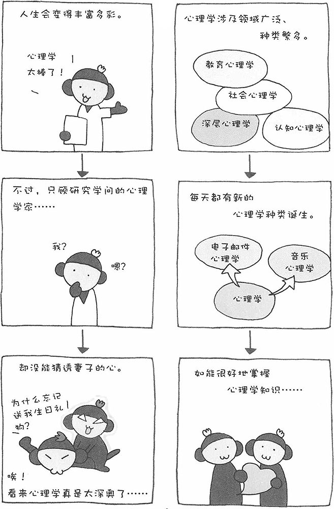

心理学从哲学中分离出来已经有一百多年的历史了，不过仍可以说它是一门新的学问。由于心理学研究对象的范围十分广泛，短时间之内就派生出很多种类，从而适应各种各样领域的需要。于是，如何给心理学分类就成为一个麻烦的问题。
不同的心理学家有不同的分类方法，其解释也各不相同。一种心理效应往往与多个种类的心理学相关，因而，究竟该将其归类到哪个种类的心理学就非常困难。不过，将其归类并不重要，而且这也不是心理学研究的本质。在这里，我只列举一些具有代表性的心理学分类，供大家参考。
█ 基础心理学
认知心理学 研究知觉和记忆的心理学。"错视"等都属于这种心理学研究的范畴。
发展心理学 研究人成长过程的心理、心智发展的过程等。
社会心理学 研究个人或群体在群体和社会中的行为等。
感情心理学 研究感情给身体带来的影响以及感情产生的原理等。
※此外，还有异常心理学、人格心理学、生理心理学、语言心理学等。
█ 应用心理学
临床心理学 研究治疗心理问题的方法，用于临床治疗的心理学。
性格心理学 研究性格形成的因素，对性格进行分类的心理学。
教育心理学 将心理学应用于教育第一线，达到是提高教育效果的目的。
犯罪心理学 不仅研究罪犯的心理，还研究预防犯罪的方法。
色彩心理学 研究色彩带给人的心理效应。也有人将其归入认知心理学的范畴。
※此外，还有产业心理学/灾害心理学/运动心理学/环境心理学/交通心理学/民族心理学/空间心理学/广告心理学等。
